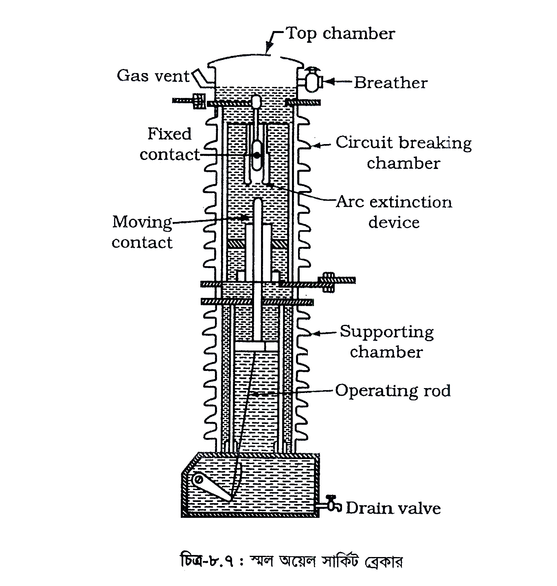

<div class="content">
    <div class="scroller">
        <p class="page-no">143</p><br><br>
        <h2></h2>

        <style>
            /*h4{*/
            /*font-size: 18px;*/
            /*}*/
        </style>

        <div style="margin-bottom: 24px;">
            <h4 class="topic-title-no">Disadvantages: The disadvantage of oil as an arc quenching medium are:</h4>
            <h4 class="topic-title"></h4>
            <p>
            </p>
        </div>

        <div>
            <h4 class="topic-title-no">(1)</h4>
            <h4 class="topic-title">It is inflammable and there is a risk of a fire. </h4>
            <p>
            </p>
        </div>

        <div>
            <h4 class="topic-title-no">(2)</h4>
            <h4 class="topic-title">It may form an explosive mixture with air. </h4>
            <p>
            </p>
        </div>

        <div>
            <h4 class="topic-title-no">(3)</h4>
            <h4 class="topic-title">The arcing products (e.g., carbon) remain in the oil and its quality deteriorates with successive operations. This necessitates periodic checking and replacement of oil.</h4>
            <p>
            </p>
        </div>

        <div>
            <h4 class="topic-title-no">(গ) লো বা স্মল অয়েল সার্কিট ব্রেকার বা মিনিমাম (Low or Small Oil Circuit Breaker or minimum):</h4>
            <h4 class="topic-title"></h4>
            <p>
            </p>
        </div>

        <div style="margin-top: 10px;">
            <h4 class="topic-title-no">
            </h4>
            <h4 class="topic-title"></h4>
            <p>
                অয়েল সার্কিট ব্রেকারে তেল দুটি কাজ করে থাকে। প্রথমত, আর্ক নির্বাপণ ও দ্বিতীয়ত, ইনসুলেশনের এই কাজ করে। পরীক্ষা করে দেখা গেছে যে, সার্কিট ব্রেকারে ব্যবহৃত তেলের অধিকাংশই ইনসুলেশনের কাজ করে, বাকি মাত্র 10% তেল আর্ক নির্বাপণের কাজে ব্যবহৃত হয়।
                এ তথ্যের উপর ভিত্তি করে স্মল অয়েল সার্কিট ব্রেকার আবিষ্কৃত হয়েছে। এতে দুটি  আলাদা চেম্বার পরস্পর হতে বিচ্ছিন্ন অবস্থায় তেল দ্বারা পূর্ণ থাকে: উপরেরটি সার্কিট ব্রেকিং চেম্বার এবং নিচেরটি সাপোর্টিং চেম্বার (Supporting chamber) হিসেবে কাজ করে। এ দুটি চেম্বার পরস্পর হতে আলাদা করা থাকে, যাতে এক চেম্বারের তেলের সাথে অন্য চেম্বারের তেল মিশ্রিত হতে না পারে।
            </p>
        </div>

        <p><b>চেম্বার দুটি আলাদা রাখার কারণ : </b>এ ব্যবস্থা এখানে দুটি সুবিধা প্রদান করে: প্রথমত, সার্কিট ব্রেকিং চেম্বারে আর্ক নির্বাপণের জন্য খুব সামান্য পরিমাণ তেলের প্রয়োজন হয়, দ্বিতীয়ত, সাপোর্টিং চেম্বারে রক্ষিত তেল আর্কের জন্য দূষিত হতে পারে না। </p>

        <p class="c-align">
            
        </p>

        <p class="c-align">চিত্র- ৮.৭ : স্মল অযেল সার্কিট ব্রেকার
            <span class="tooltip_my">
                <i class="fa fa-play-circle video-class" videosrc="videos/143/143-anim-92.mp4" style="font-size: 20px;" aria-hidden="true"></i>
                <span class="tooltiptext">click here to see the video</span>
            </span>
        </p>

    </div>
</div>